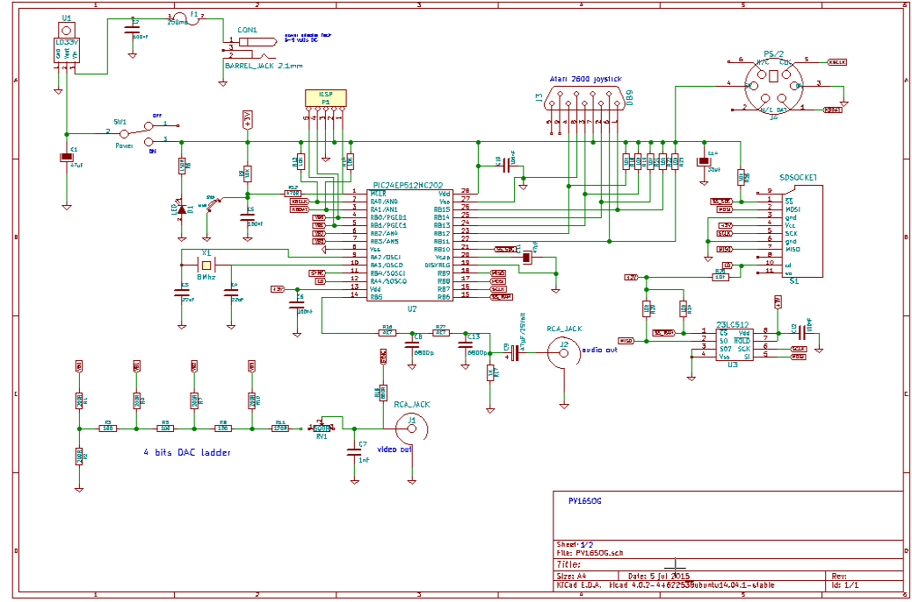
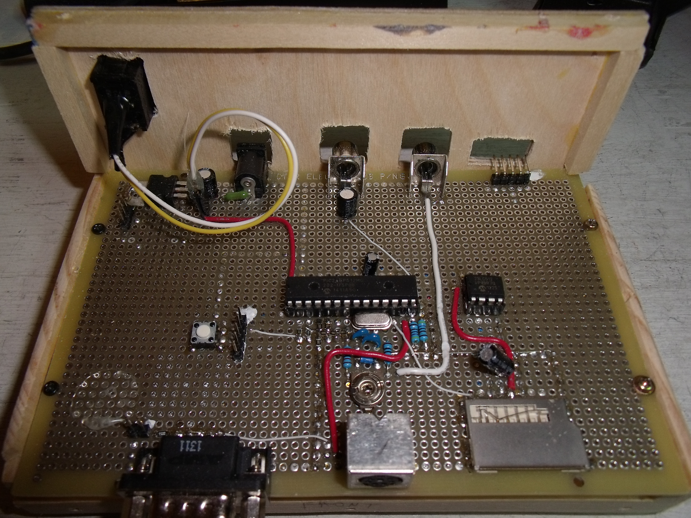
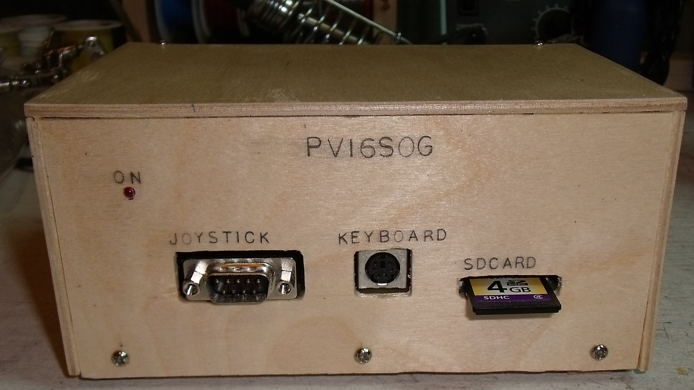
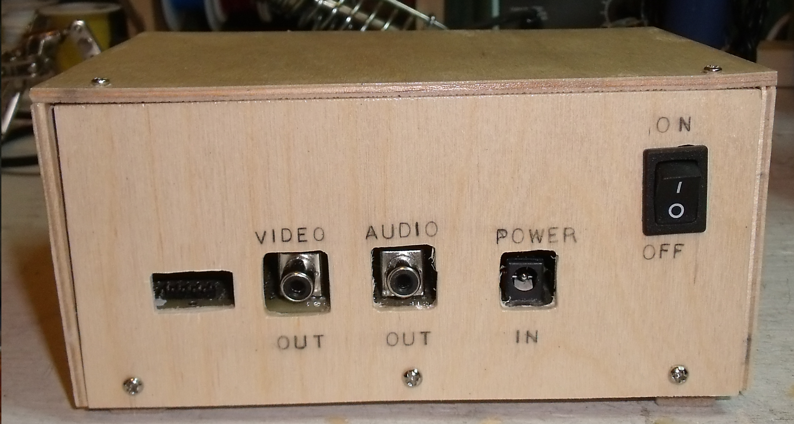

Ordindateur PV16SOG
Licence
Ce document fait partie du projet PV16SOG et est fourni sous licence CC-NC-SA-BY V3.0
auteur: Jacques Deschênes
révision 1.0
Copyright: 2015,2016, Jacques Deschênes
Présentation
L'objectif de ce projet était de créer un petit ordinateur qui aurait des capacités semblables à celle d'un ordinateur des années 70 comme le TRS-80 en utilisant
la technologie disponible en 2015. Je voulais garder le montage électronique le plus simple possible afin qu'il puisse être réaliser à faible coût par un amateur avec
un minimum d'expérience en électronique.
Il s'agit d'un petit ordinateur basé sur un microcontroleur PIC. PV16SOG signifit: PICVision 16 Shade Of Gray.
caractérisiques de PV16SOG
- MCU PIC24EP512MC202
- Affichage vidéo de 240x170 pixels en 16 tons de gris.
- Sortie son: tonalitée simple ou bruit blanc.
- interface pour carte SD.
- interface pour clavier PS/2
- interface pour joystick Atari 2600
- mémoire RAM externe de 64Ko à interface SPI. Microchip 23LC512
- logiciels en firwmare:
schéma électronique

principaux composants
- MCU PIC24EP512MC202, ce processeur 16 bits contient 512Ko de mémoire flash et 48Ko de RAM.
- Mémoire SPI RAM 23LC512, mémoire sérielle à interface SPi de 64Ko.
- Régulateur de tension LD33V.
- Une embase pour la carte SD.
- Un connecteur MINI-DIN-6 pour le clavier PS/21.
- Deux Connecteurs RCA audio pour les sorties son et vidéo NTSC.
- Un connecteur barrel jack 2,1mm pour l'adapteur d'alimentation2.
- Un cristal de 8Mhz.
- Un bouton momentané pour le RESET.
- 1 LED indicateur d'alimentation
Le reste sont des résistances et condensateurs. Les résistances R1-R5, R7,R8,R10,R11 pour le convertissseur numérique/analogique doivent avoir une présicion d'au moins 1%.
prototype

- Le MCU fonctionne à 70Mhz ce qui donne une bonne vitessse d'exécution pour les programmes BASIC.
- Le 16 niveaux de gris sont produits par un convertisseur R-2R de 4 bits branché sur les sorties RA0:3. La synchronisation vidéo est assuré par une sortie Output compare configurée en PWM sur la broche RB4.
- Le son est assuré par génération d'ondes carrées en sortie sur la broche RB5.
- L'interface clavier requiert les broches RA0 pour le signal clock et RA1 pour le signal data.
- L'interface joystick utilise les 5 broches RB11:15. Il s'agit d'un joystick Atari 2600 à contact ON/OFF.
- La carte SD et le RAM SPI utilise la même interface sur RB7:RB9 avec un signal de sélection respectif sur RB6 pour la RAM et RB10 pour la carte.
De plus la présence de la carte SD est détecté sur l'entrée RA4.
Ce montage simple peut-être réalisé rapidement et à peu de frais. J'ai exécuté celui-ci sur un carte à pastille Vector electronics modèle 8015.
J'ai aussi réalisé un boitier en contre-plaqué de merisier 3mm d'épaisseur.

vue de face

vue arrière
NOTES
- Le clavier PS/2 est alimenté en 3,3 volt comme le MCU au lieu des 5 volts spécifiés pour ces claviers. Celà ne semble pas
poser de problèmes. Si votre clavier pose problème à ce voltage il faudra ajouter un deuxième régulateur de tension à 5 volt et
l'alimenter à cette tension sans autre modification au circuit. L'interface PS/2 fonctionnant en collecteur ouvert il n'est pas
nécessaire que les pull-up R13 et R14 soient au même voltage que l'alimentation du clavier.
- L'adapteur d'alimentation doit fournir un voltage DC avec le positif connecté à l'anneau central. Le voltage doit-être d'au
moins 5 volts. Si un deuxième régulateur 5 volts a été ajouté ce voltage doit-être d'au moins 7 volts. Il ne faut pas que le
voltage soit trop élevé non plus car ça augmente la puissance dissipée dans le régulateur de tension. Donc un adapteur qui
fourni un voltage DC entre 5 et 9 volt avec un courant de 500 mA est adéquat.